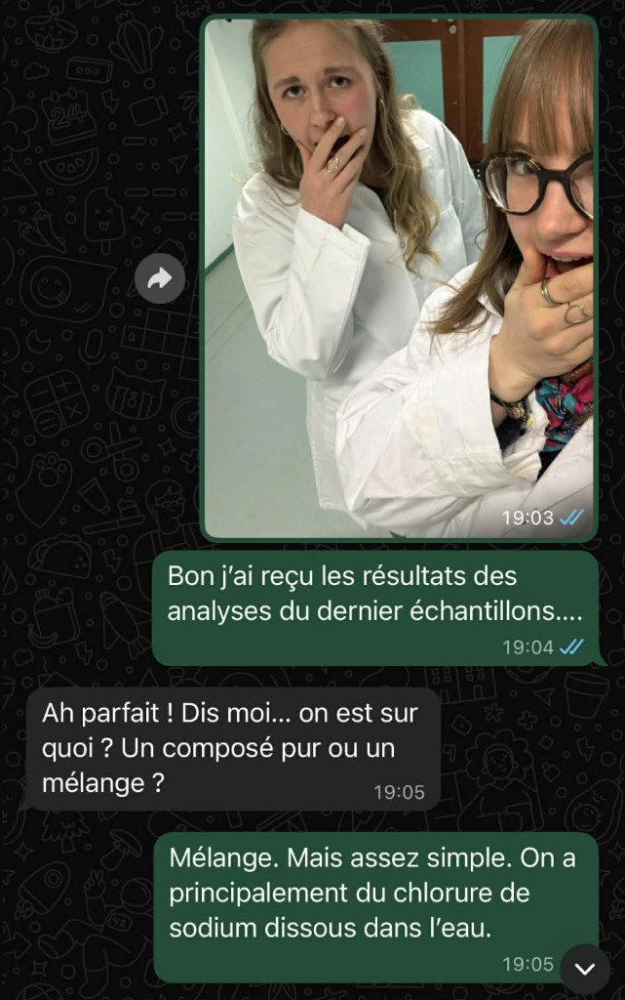
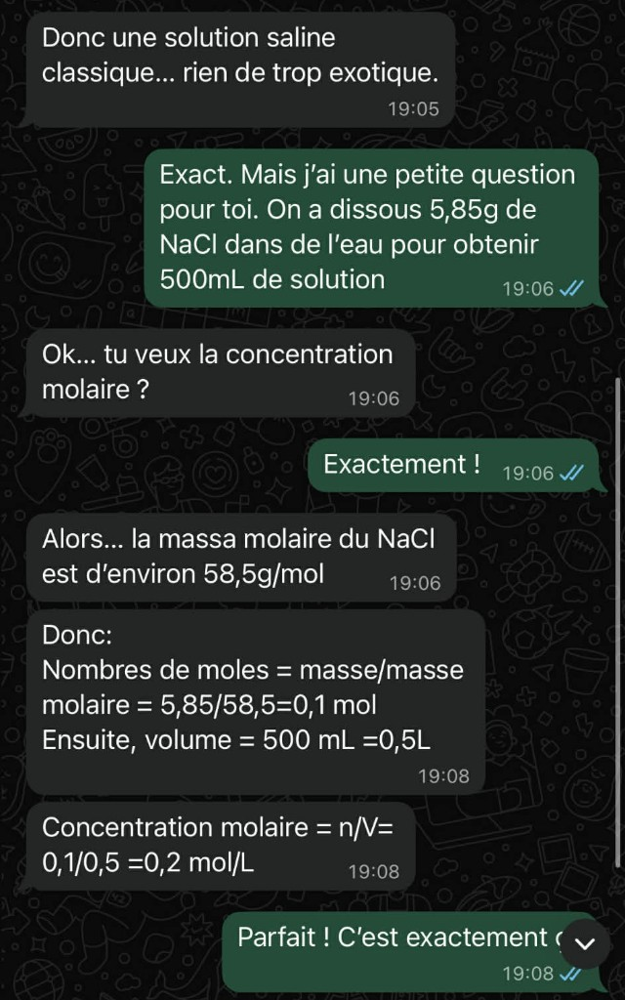
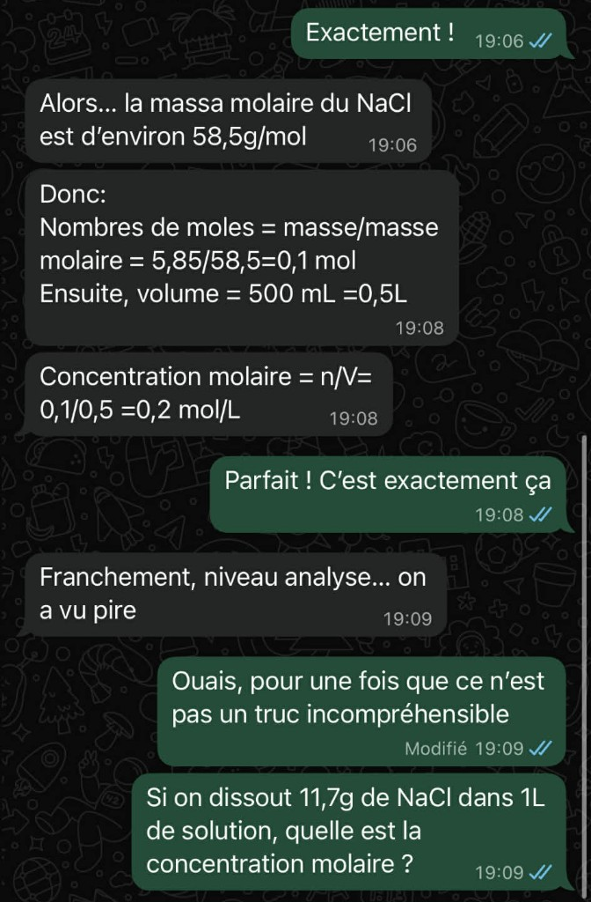
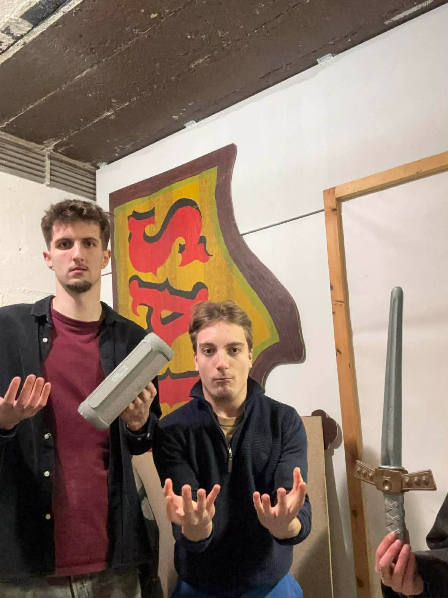
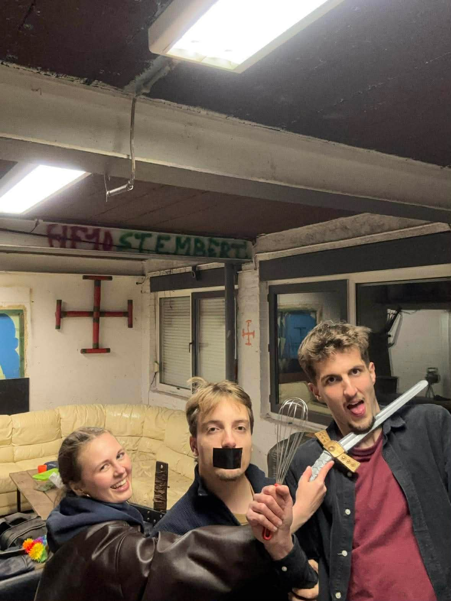
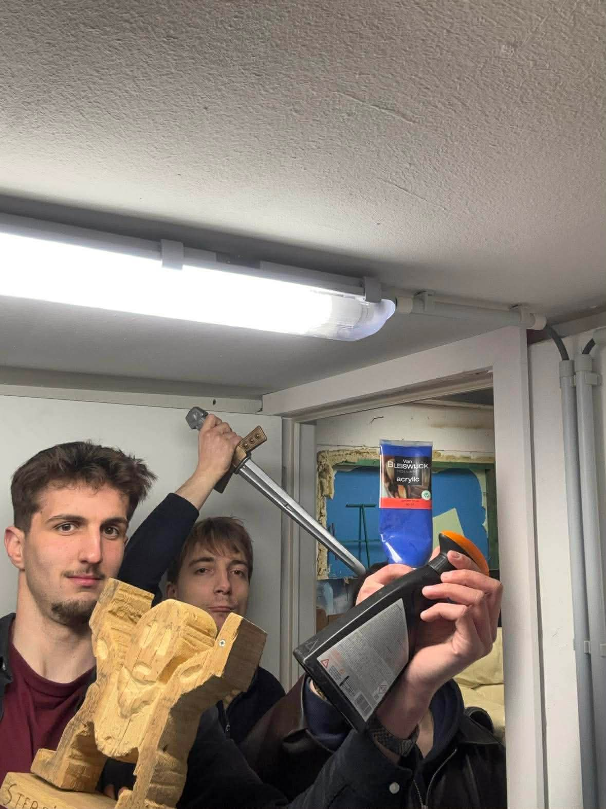
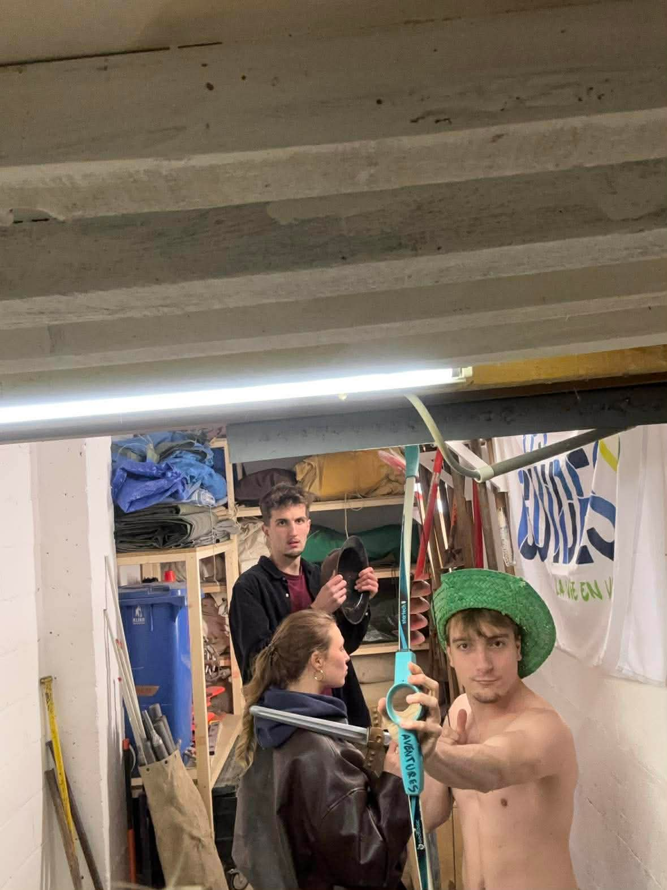

[ CLASSIFICATION: RESTREINT ]
Patrouille Alpha — inscription, briefing vidéo et enchaînement des objectifs.
Enregistrez chaque membre présent (totem ou identité). Ajoutez une ligne par personne, puis validez!
50.510418, 6.039995 — Niveau 15
Au point 1, repérez le cockpit sur la carte. Sur place, validez votre arrivée puis fouillez les alentours pour trouver un pack de survie enterré avant d’accéder au point 2.
Partie 1 Carte & repérage cockpit
Vous êtes sur la bonne zone. Explorez le terrain autour du cockpit : un pack de survie a été enterré dans le périmètre. Retrouvez-le avant de poursuivre la mission.
Direction le point 2.
Indice : les chimistes vous attendent sur la zone ci-dessous. Mémorisez-la : au point 3.
50.518356, 6.023498 — Niveau 15



Résolvez l’énigme pour afficher les coordonnées du point 4.
Coordonnées : 50.533019, 6.004467 — rendez-vous au moteur (point 4).
Carte & validation sur place
50.550609, 5.988570 — Niveau 16
Lorsque la patrouille est physiquement au point 4 (moteur), validez pour afficher la vidéo des ingénieurs.
Lien carte : 50.575722, 5.967809 — Niveau 15
Observez les photos et les similitudes. Sous les images, saisissez le nom de l’objet identifié.




Lien carte : 50.587840, 5.970914 — Niveau 15
Rendez-vous final: parking de la Gileppe — coordonnées indicatives 50.486000, 5.974500.